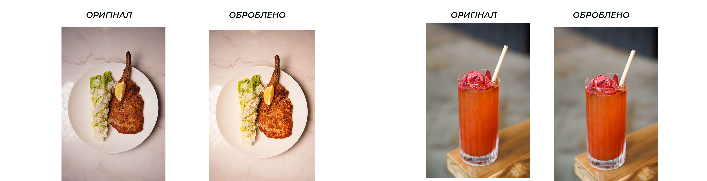
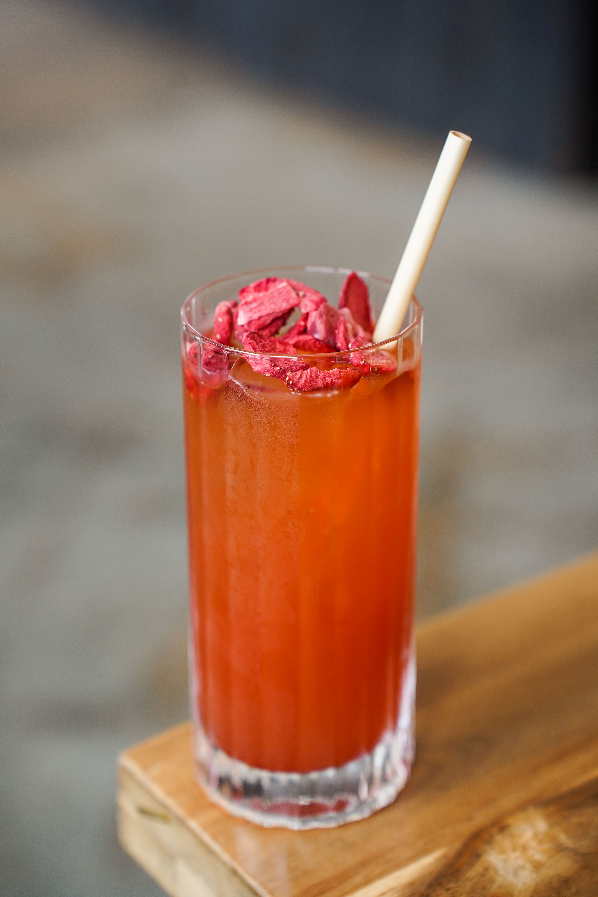
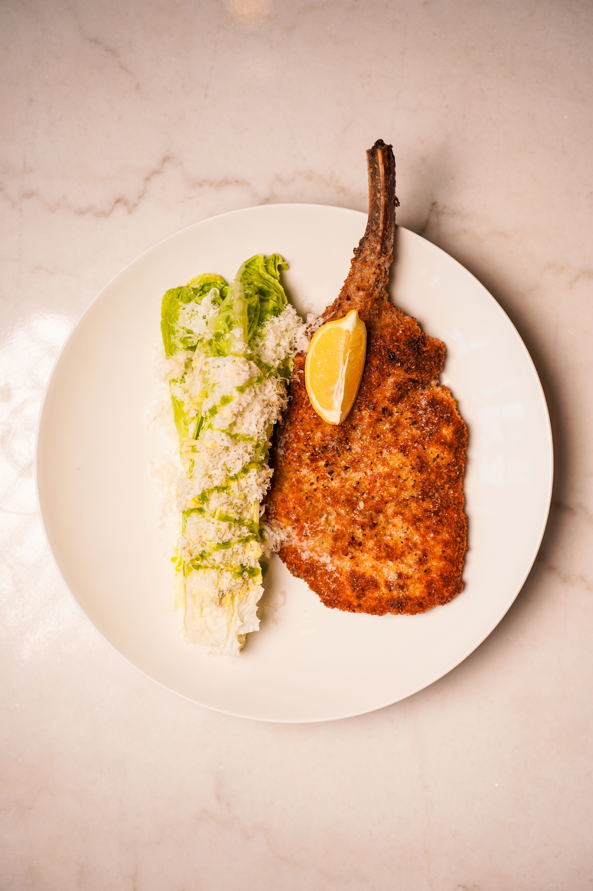
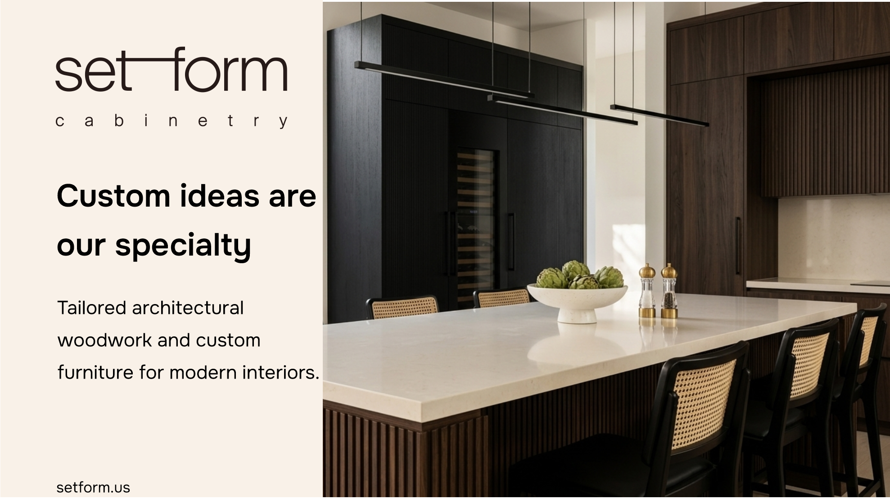

Настрій ресторану та його вплив на монтаж:
Настрій закладу ThanksToHarrison — це перш за все затишна, але водночас стильна й преміальна вечірня атмосфера. Це про тепло естетичного світла, живу кухню, майстерність барменів та задоволення від деталей.[cite: 1]
Цей вайб безпосередньо визначив темп та ритм монтажу:[cite: 1]
Перший ролик (Анонс): Ритм більш структурований. Переходи та титри розміщені так, щоб глядач комфортно зчитував ключову інформацію про дату й подію, але при цьому завдяки музичному та відео супроводу відчував апетитний та гостинний настрій заходу.[cite: 1]
Другий ролик (Атмосферний): Тут монтаж більш м'який та плинний. Акцент зроблено на деталях — від сутінкового фасаду та вогню на кухні до роботи барменів і подачі напоїв. Музика та плавні переходи створюють відчуття занурення в естетику закладу, де хочеться провести вечір.[cite: 1]